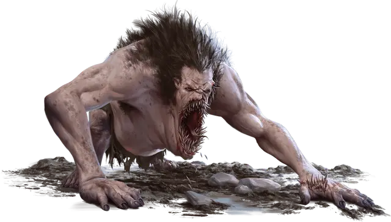

Пасть Йеногу
Maw of Yeenoghu
Огромное Исчадие (Демон), обычно законно-злое

Класс Доспеха 15 (природный доспех)
Хиты 161 (14к12 + 70)
Скорость 40 футов
| мод | спас | ||
|---|---|---|---|
| СИЛ | 23 | +6 | +6 |
| ЛОВ | 10 | +0 | +0 |
| ТЕЛ | 21 | +5 | +9 |
| мод | спас | ||
|---|---|---|---|
| ИНТ | 8 | −1 | −1 |
| МДР | 14 | +2 | +2 |
| ХАР | 10 | +0 | +4 |
Навыки Восприятие +6
Чувства тёмное зрение 60 футов, пассивное Восприятие 16
Языки Бездны, Великаний
Опасность 10 (5900 опыта)
Бонус мастерства +4
Особенности
Сопротивление магии. Пасть Йеногу совершает с преимуществом спасброски от заклинаний и прочих магических эффектов.
Действия
Мультиатака. Пасть совершает две атаки Укусом или Метанием клыка:
Укус. . Рукопашная атака оружием: +10 к попаданию, досягаемость 10 фт., одна цель. Попадание: 19 (2к12+6) колющего урона.
Метание клыка. . Дальнобойная атака оружием: +10 к попаданию, дистанция 30/90 фт., одна цель. Попадание: 11 (1к10+6) колющего урона.
Пожирающий разбег (перезарядка 5-6). Пасть перемещается на свою скорость, не провоцируя атак, и может перемещаться через пространство существ Большого размера и меньше. Каждый раз, когда пасть впервые входит в пространство существа во время этого перемещения, это существо должно преуспеть в спасброске Силы Сл 18, иначе получит 25 (3к12 + 6) колющего урона и становится схваченным (Сл высвобождения 16); если существо уже схвачено таким образом, оно должно получить 25 (3к12 + 6) колющего урона и падает ничком. Пока этот захват не закончится, цель считается опутанной. Пасть может единовременно держать в захвате только одно существо таким образом.
Реакции
Клыкастое возмездие. В ответ на нанесенный урон пасть может совершить одну атаку Укусом по случайному существу в пределах 10 футов от себя. Если в пределах досягаемости нет ни одного существа, пасть может совершить две атаки Метанием клыка.
Описание
Холмовые великаны известны своим ненасытным голодом, который может привлечь внимание повелителя демонов Йеногу, известного как Зверь Мясник. Свирепый холмовой великан иногда обращается к Йеногу за помощью в расширении области своей свирепости. Иногда холмовой великан поглощает проклятый артефакт, который превращает великана в исчадие. Время от времени Йеногу шепчет обещания власти в снах великана, чей голод превосходит голод других великанов. В любом случае, в результате получается прожорливое чудовище по имени пасть Йеногу, которое полностью предано повелителю демонов.
У пасти Йеногу отрастает грива волос, и он горбится, подобно гноллу. Его челюсть вырастает и расширяется, а рот наполняется множеством рядов острых зубов. Эти зубы постоянно растут, заставляя пасть кусать и пережевывать всё, что находится в пределах досягаемости. Некоторые пасти безрассудно вырывают зубы изо рта в поисках облегчения, но зубы быстро отрастают заново. Находчивые пасти используют это явление в качестве оружия, метая в своих врагов гроздья зубов.
Пасть Йеногу бросается на свою жертву с положения на четвереньках с широко открытой пастью, скребя землю, как плуг.